|
Project 1: Colorizing the E Harrison — CS180, Fall 2026 |
OverviewIn the early 1900s, Sergei Prokudin-Gorskii photographed the Russian Empire in color long before color printing existed. He recorded each scene three times through a red, a green, and a blue filter onto a single glass plate. The digitized negatives — now held by the Library of Congress — stack the three exposures vertically (top to bottom: B, G, R). The goal of this project is to take a stacked plate, split it into its three color channels, and align them into a single, artifact-free color photograph. The plate below shows the three raw exposures — notice how simply stacking them without alignment produces color fringing around edges. |

A raw glass plate (cathedral): the B, G, and R exposures stacked top-to-bottom. |
Part 1: Naive Single-Scale Alignment
The simplest approach fixes the blue channel and searches for the
(x, y) translation of the green and red channels that best matches it. I
exhaustively try every displacement in a window of I scored candidates with two metrics. The L2 (Euclidean) distance measures the raw pixel difference between the two channels, while normalized cross-correlation (NCC) takes the dot product of the two channels after mean-subtracting and normalizing them to unit length. NCC is more robust to overall brightness differences between channels, so I used it as my default metric. |
|
|
This exhaustive search is cheap enough to run directly on the small, low-resolution JPEGs. My first attempt scored each candidate over the entire channel — and the results were not quite right. |
|
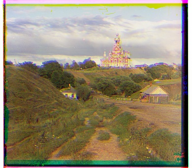 cathedral |

monastery |

tobolsk |
|
The culprit is the ragged border of each glass-plate scan. The black, white, and discolored edges do not agree across the three channels, so when they are included in the matching metric they dominate the score and pull the search toward a bad displacement. monastery shows this most dramatically — the heavy red/cyan ghosting means the channels never locked onto the real content. My fix is to score only the interior of each channel. Before evaluating the metric, I crop a centered window out of both channels, so the noisy borders are ignored and the metric reflects only the actual scene. |
|
|
With the borders cropped out of the scoring, all three plates align cleanly. The displacement vectors listed below are the (row, col) shifts applied to the green and red channels. |

cathedral G: (5, 2) R: (10, 3) |
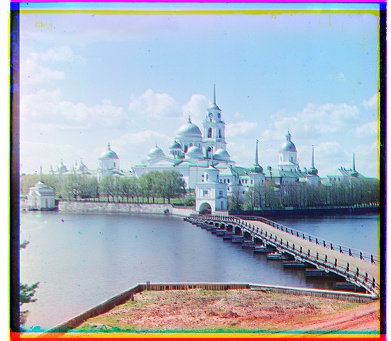 monastery G: (-3, 2) R: (3, 2) |
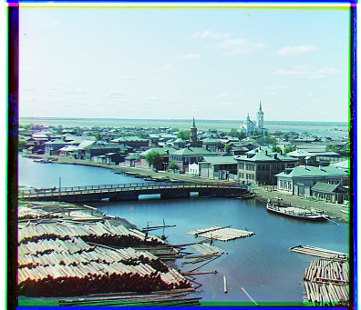 tobolsk G: (3, 3) R: (7, 3) |
Part 2: Multi-Scale Alignment with an Image Pyramid
The full-resolution glass-plate scans are
The fix is a coarse-to-fine image pyramid. I recursively downscale
the image by a factor of two until it is small, estimate the alignment on the tiny
coarse image (where a large displacement becomes a small one), then propagate that
estimate down the pyramid — doubling it at each level and refining it with a
small |
|
|
With the pyramid, each high-resolution plate aligns in well under a minute. Below are my results on the provided example images, with the computed (row, col) displacement vectors listed beneath each one. |
|
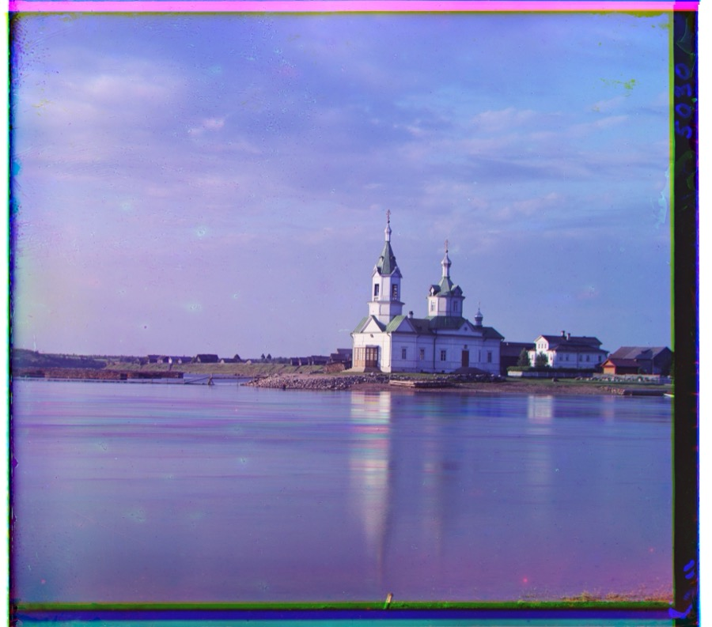 church G: (24, 4) R: (58, -4) |
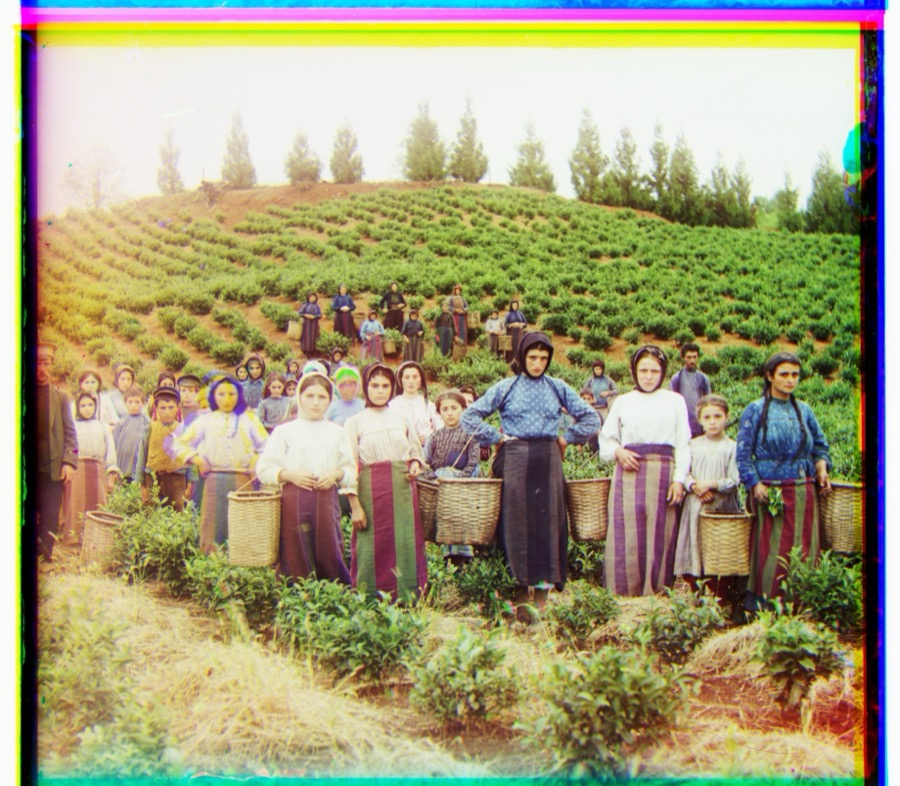 harvesters G: (59, 19) R: (124, 18) |
|
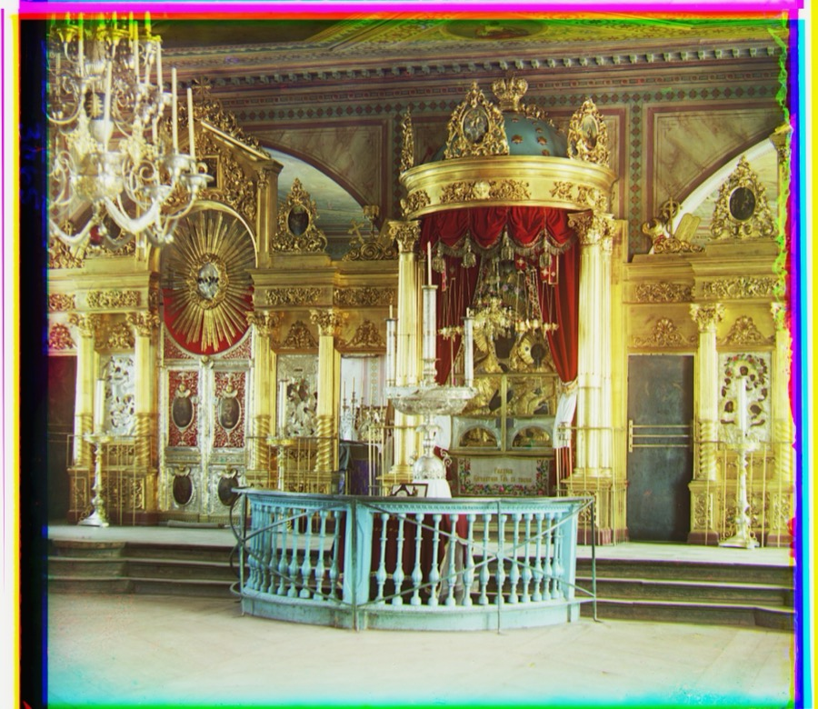 icon G: (41, 18) R: (89, 23) |
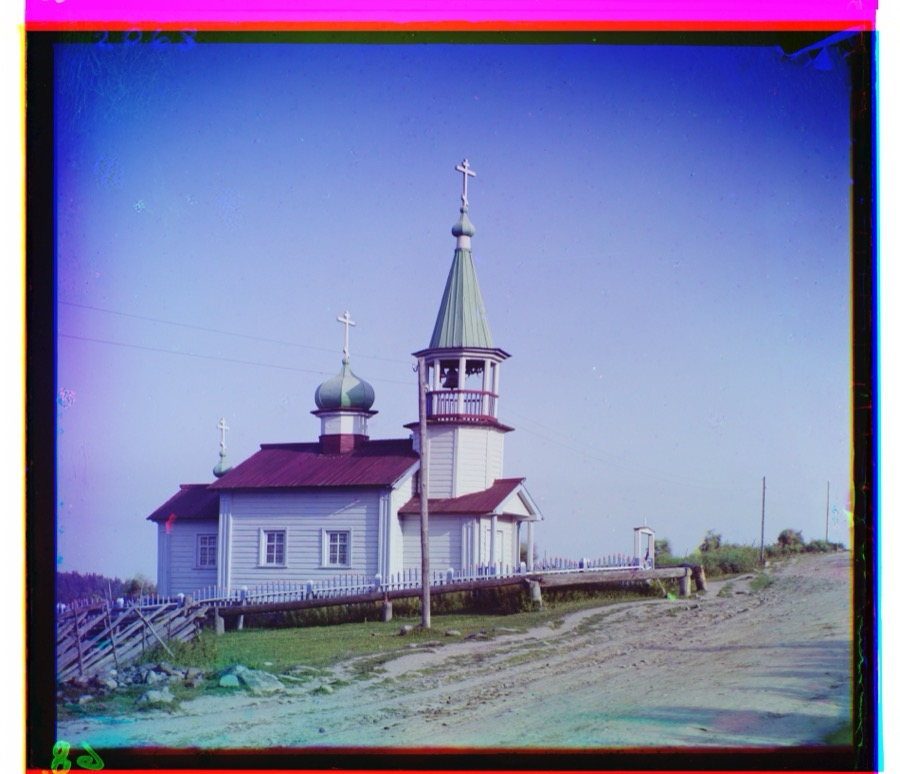 ilemselga G: (41, 7) R: (131, 11) |
|
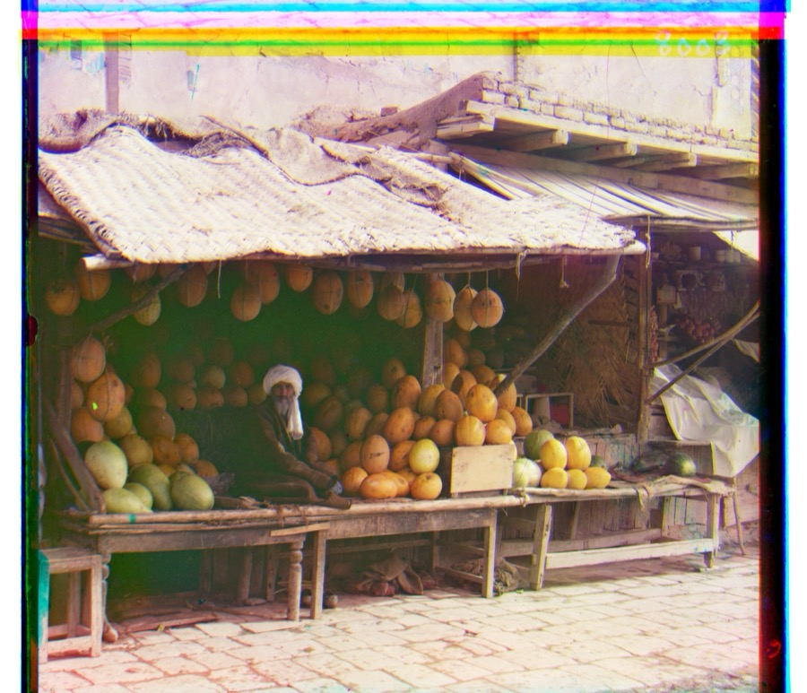 melons G: (87, 0) R: (185, 2) |
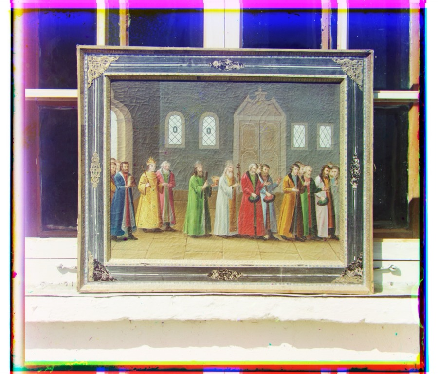 religous_painting G: (27, 3) R: (69, 7) |
|
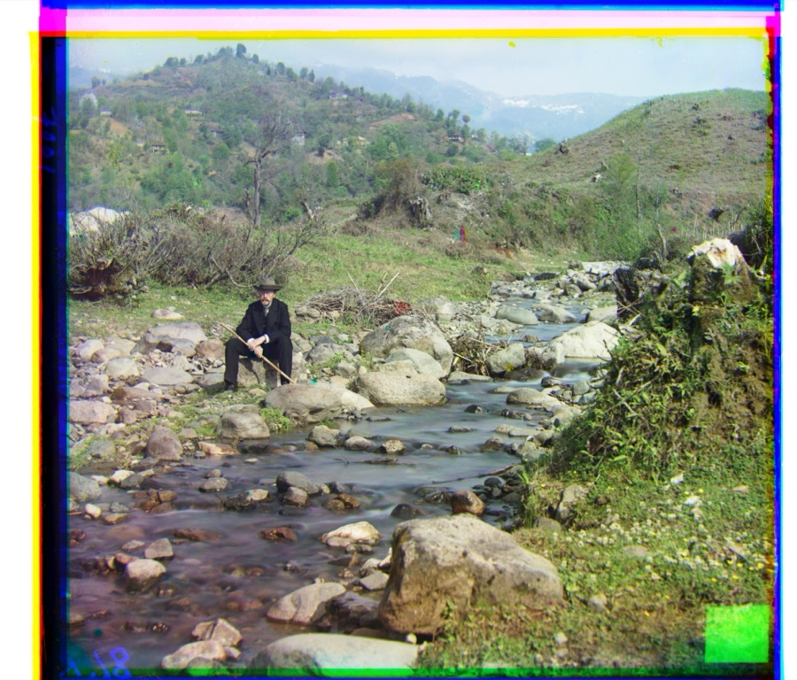 self_portrait G: (77, 29) R: (175, 37) |
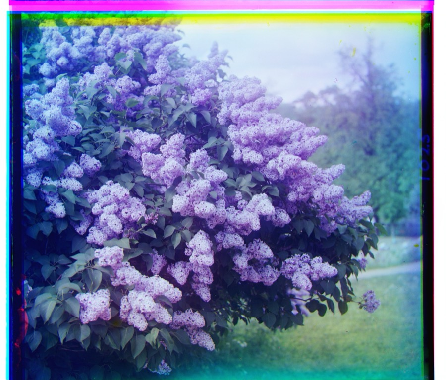 siren G: (49, -5) R: (96, -23) |
|
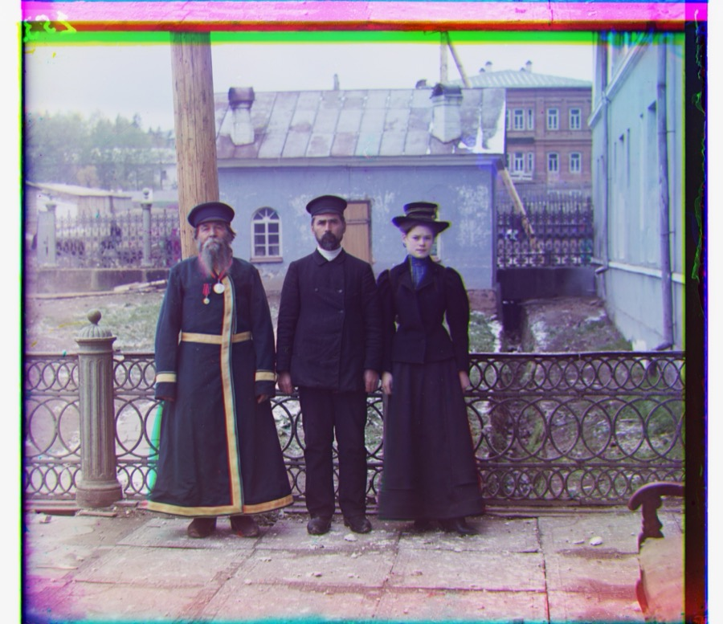 three_generations G: (49, 15) R: (108, 11) |
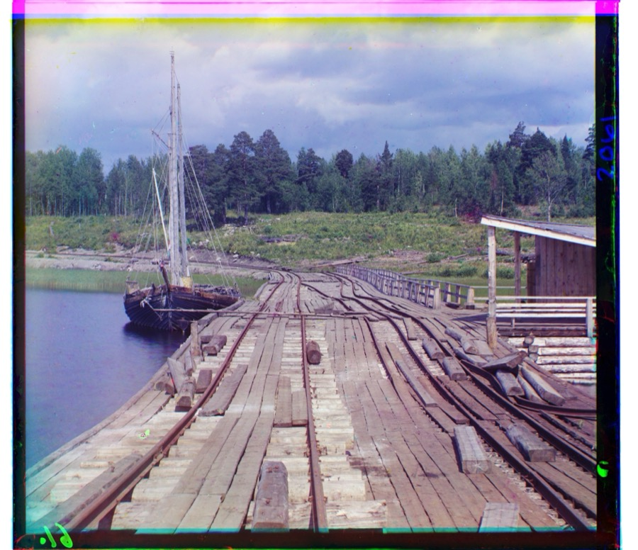 wharf G: (15, -6) R: (81, -15) |
A Failure Case: Emir of BukharaOne image does not align correctly with my basic pipeline. The green channel lines up, but the red channel lands at (24, -4) — less than half of the green channel's (48, 23), when it should be roughly double. The result is the heavy red ghosting seen below. |
|
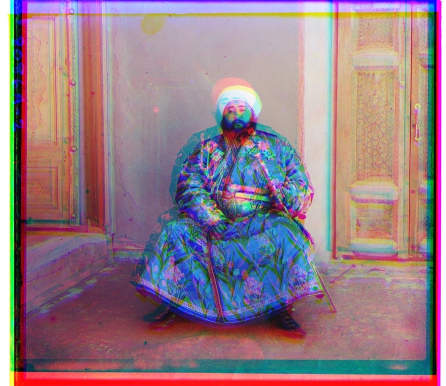 emir G: (48, 23) R: (24, -4) — the red channel is misaligned |
|
The problem is that my metrics compare raw pixel intensities. The Emir's bright silk robe reflects very differently through the red, green, and blue filters, so the same region has very different brightness in each channel. NCC and L2 therefore find a false optimum for the red channel — it matches the overall brightness pattern rather than the true structure. The fix would be to align on edges or gradients (which are consistent across channels) instead of raw intensities. |
My Own SelectionsFinally, I chose three additional plates from the Library of Congress Prokudin-Gorskii collection and ran them through the same pyramid pipeline. |
|
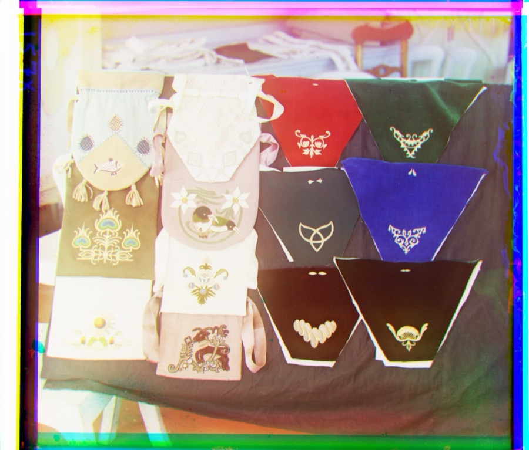 cloth G: (58, 54) R: (110, 83) |
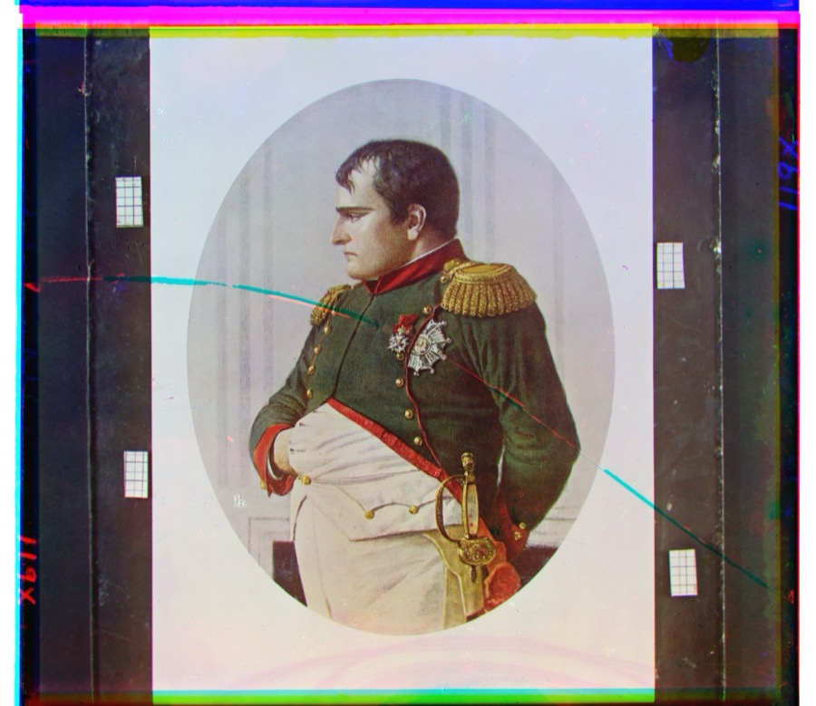 napoleon G: (63, 5) R: (132, -2) |
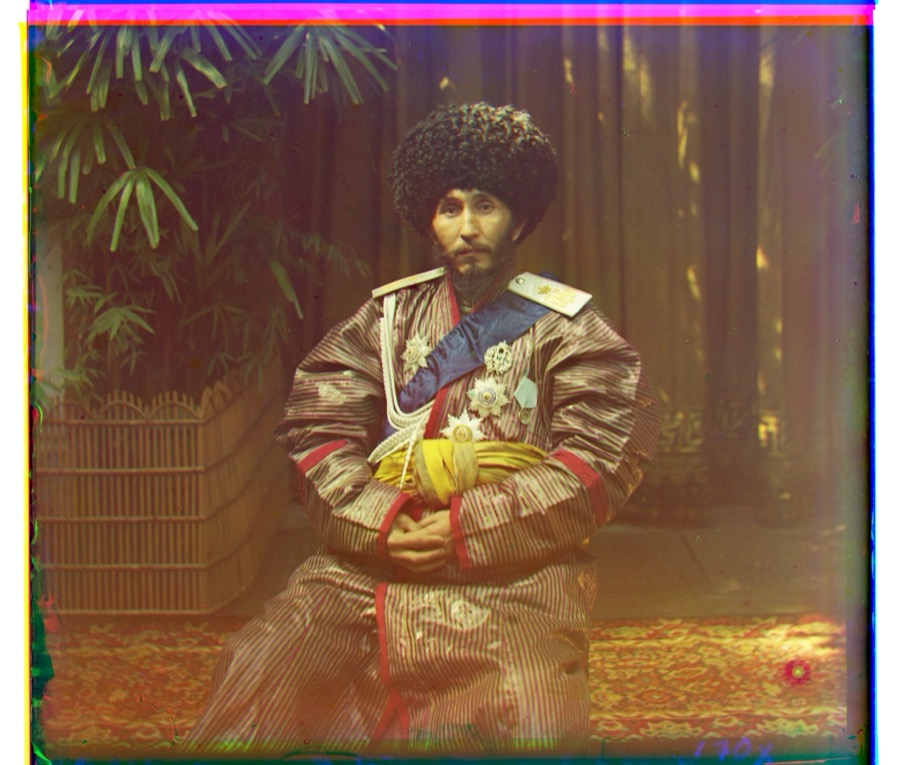 nice_hat G: (41, 6) R: (106, 1) |
|
Website template from Jon Barron. |